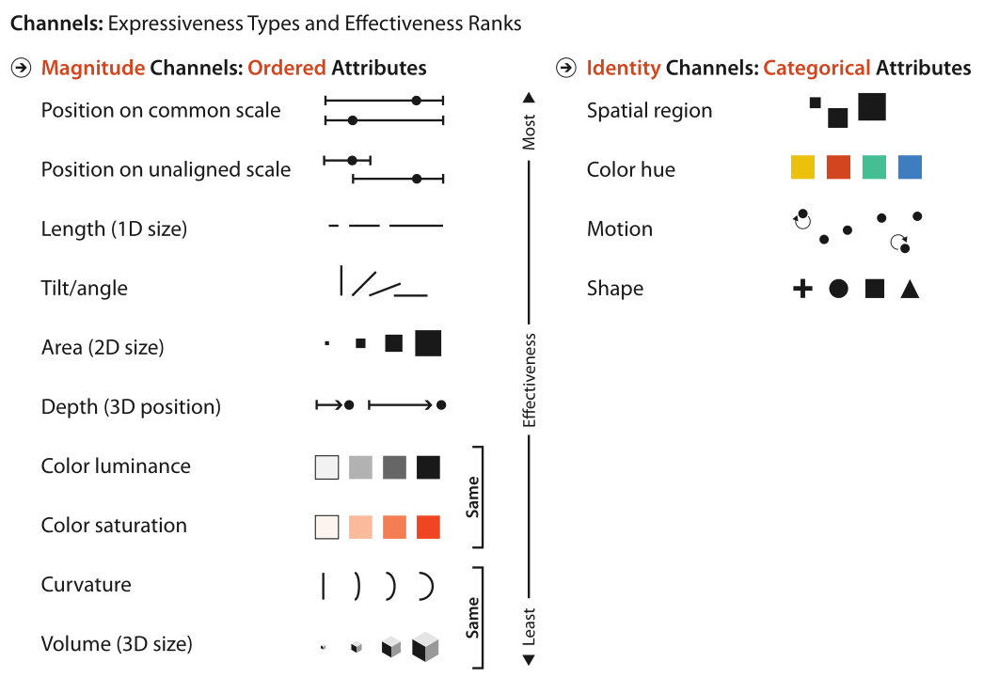

Marks
Type
A
connection mark shows a pairwise relationship between two items, using a line. A
containment mark shows hierarchical relationships using areas and to do so connection marks can be nested within each other at multiple levels.遏制的同义词是封闭和嵌套。
Synonyms for containment are enclosure and nesting.
Channels
Type
position
aligned planar position, unaligned planar position, depth (3D position), and spatial region.
color
其他的则与颜色有关，它有三个不同的方面:色调、饱和度和亮度。
Others pertain to color, which has three distinct aspects: hue, saturation, and luminance.
size
length is 1D size, area is 2D size, and volume is 3D size
motion-oriented
motion pattern, for instance, oscillating circles versus straight jumps, the direction of motion, and the velocity.
angle
Curvature曲率
Shape

Two principles
expressiveness principleThe identity channels are the correct match for the categorical attributes that have no intrinsic order.The magnitude channels are the correct match for the ordered attributes, both ordinal and quantitative.使用对的方式表达对的种类的数据
The identity channels are the correct match for the categorical attributes that have no intrinsic order.
The magnitude channels are the correct match for the ordered attributes, both ordinal and quantitative.
使用对的方式表达对的种类的数据
effectiveness principle重要的数据（属性）用更加突出鲜明的channels没那么重要的属性用不怎么突出的Channels
重要的数据（属性）用更加突出鲜明的channels
没那么重要的属性用不怎么突出的Channels
不同channel的准确性比较
满足幂率
不同Channel之间的干扰
- 颜色过多会导致无法区分
- 同时颜色会影响对大小的判断
⭐Popout
优点：发现不同的物体所需要的时间不取决于干扰物的数量
方法
- 颜色
- 形状
- angle
- shadow
- proximity
- ×parallel line
- 运动方式
- 闪烁
- 运动方向
- 运动速度
Grouping
- areas
- lines
- identity
- proximity（邻近性）